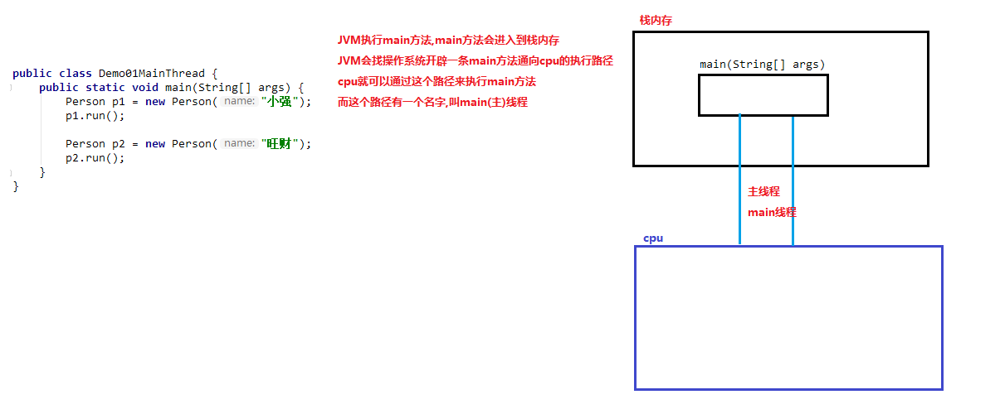

一、异常
- 概念： 指的是程序在执行过程中，出现的非正常的情况，最终会导致JVM的非正常停止。 在Java等面向对象的编程语言中，异常本身是一个类，产生异常就是创建异常对象并抛出了一个异常对象。Java处理异常的方式是中断处理。
- 注意： 异常指的并不是语法错误,语法错了,编译不通过,不会产生字节码文件,根本不能运行.
- 程序在运行过程中遇到异常的代码，不会执行try中后面的代码，直接跳到catch中执行其中的代码
- 如果finally中有return，则只会返回finally中的结果，不会反回其他的结果
- 异常体系
- 异常机制其实是帮助我们找到程序中的问题，异常的根类是java.lang.Throwable，其下有两个子类：java.lang.Error与java.lang.Exception，平常所说的异常指java.lang.Exception。
- Throwable体系：
- Error:严重错误Error，无法通过处理的错误，只能事先避免，好比绝症
- Exception:编译期异常，进行编译Java程序出现的问题。异常产生后程序员可以通过代码的方式纠正，使程序继续运行，是必须要处理的。好比感冒，阑尾炎
- 异常分类
- RuntimeException:运行期异常，Java程序运行过程中出现的问题
- checked异常，在编译时期，就会检查，如果没有处理异常，则编译失败。
- 异常产生过程解析
- 异常的传递：异常的传递按方法的调用链相反的方向进行传递，直到传给JVM虚拟机，导致程序终止。
- JVM会做两件事情（默认调用printStackTrace()方法）
- jvm会根据异常产生的原因创建一个异常对象，这个异常对象包含了异常产生的（内容，原因，位置），new ArrayIndexOutOfBoundsException("3")
- 在getElement方法中，没有异常的处理逻辑（try...catch），那么jvm就会把异常对象抛出给方法的调用者main方法来处理这个异常
- main方法接收到了这个异常对象，main方法也没有异常的处理逻辑继续把对象抛出给main方法的调用者jvm处理
- jvm接收到了这个异常对象，做了两件事
- 把异常对象（内容，原因，位置）以红色字体打印在控制台
- jvm会终止当前正在执行的java程序---->中断处理
- 异常处理
- throw关键字（消极处理）
- 运行时异常可以不用处理，程序会自动交给JVM虚拟机处理，即使方法抛出了运行时异常，方法调用出也可以不用处理此异常
- 作用：可以使用throw关键字在指定的方法中抛出指定的异常
- 格式：throw new xxxException(“异常产生的原因”);
- 注意：
- throw关键字必须写在方法内部
- throw关键字后边new的对象必须是Exception或者Exception的子类对象
- throw关键字抛出指定的异常对象，就必须处理这个异常对象
- throw关键字后面创建的是RuntimeException或者是RuntimeException的子类，我们可以不处理，交给jvm处理（打印异常对象，中断程序）
- throw关键字后边创建的是编译异常，就必须处理这个异常
- 面试题：
- throw和throws的区别
- Objects非空判断
- 方法：
- public static <T> T requireNonNull(T obj):查看指定引用对象不是null。
- requireNonNull(obj,"文字提示内容");
- 声明异常throws（抛出的是编译期异常，也就是处理的警告，没有真正处理问题）
- 声明异常： 将问题标识出来，报告给调用者。如果方法内通过throw抛出了编译时异常，而没有捕获处理（稍后讲解该方式），那么必须通过throws进行声明，让调用者去处理。
- 格式：修饰符 返回值类型 方法名(参数) throws 异常类名1,异常类名2…{ }
- 作用：当方法内部抛出异常的时候，那么就必须处理异常，可以使用throws关键字处理异常对象，会把异常对象声明抛给方法调用者处理，最终交给jvm处理
- 注意：
- throws关键字必须写在方法声明处
- throws关键字后边的声明异常必须是Exception或者Exception的子类
- 方法内部如果抛出了多个异常对象，那么throws后边也必须声明多个异常，如果抛出的多个异常对象有子父类关系，那么直接声明父类异常即可
- 调用了一个声明抛出异常的方法，就必须处理声明的异常
- 要么继续使用throws声明抛出，交给方法的调用者处理，最终交给jvm，
- 要么try...catch自己处理异常
- 捕获异常（try...catch）------可以处理编译异常和运行期异常（积极处理）
- 如果异常出现的话,会立刻终止程序,所以我们得处理异常:
- 该方法不处理,而是声明抛出,由该方法的调用者来处理(throws)。
- 在方法中使用try-catch的语句块来处理异常。
- 捕获异常： Java中对异常有针对性的语句进行捕获，可以对出现的异常进行指定方式的处理。
- try:该代码块中编写可能产生异常的代码
- catch:用来进行某种异常的捕获，实现对捕获到的异常进行处理
- 格式：
try{
可能产生异常的代码
}catch{
异常的处理逻辑（一般在工作中，会把异常的信息记录到一个日志中）
}
3.注意：
- try中可能会抛出多个异常对象，那么就可以使用多个catch来处理这些对象
- 如果try中产生了异常，那么就会执行catch中的异常处理逻辑，执行完catch中的逻辑，会继续执行后面的代码
- 如果try中没有产生异常，那么就不会执行catch中异常处理的代码。
- catch可以利用多态使用父类型处理异常：本类型+左右子类异常
- 父类的catch块必须定义在其子类的catch后边
- 积极处理异常的同时可以采用消极处理异常
- Throwable类中查看信息方法
- public String getMessage():获取异常的描述信息,原因(提示给用户的时候,就提示错误原因。
- public String toString():获取异常的类型和异常详细描述信息(不用)。
- public void printStackTrace():JVM打印异常对象，默认调用此方法，异常信息是最全面的
9.finally代码块
- 有一些特定的代码无论异常是否发生，都需要执行。另外，因为异常会引发程序跳转，导致有些语句执行不到。
- 格式： (try...catch....finally:自身需要处理异常,最终还得关闭资源)
try{
可能产生异常的代码
}catch(定义一个异常的变量，用来接收try中抛出的异常对象){
异常的处理逻辑，异常对象之后，怎么处理异常对象，一般在工作中，会把异常的信息记录到一个日志里
}
...
catch(异常类名 变量名){
}finally{
无论是否出现异常都会执行
}
3. 注意：
- finally不能单独使用，必须和try一起使用
- finally一般用于资源释放（资源回收），无论程序是否出现异常，最后都要进行资源释放
- 如果不执行finally中的代码，则可以使用System.exit(0);--------退出Java虚拟机
10. 异常注意事项
- 多个异常分别处理
- 多个异常一次捕获，多次处理
- 注意点：catch里边定义的异常变量，如果有子父类关系，那么子类的异常关系就必须写在上边，否则就会报错
- 多个异常一次捕获，一次处理
- 运行时异常被抛出可以不处理。即不捕获也不声明抛出。
- 如果finally有return语句,永远返回finally中的结果,避免该情况.
- 如果父类抛出了多个异常,子类重写父类方法时,抛出和父类相同的异常或者是父类异常的子类或者不抛出异常。
- 一大两同两小（子类重写父类方法）
- 一大：子类方法的修饰符必须大于等于父类修饰符权限
- 两同：方法名称和参数列表相同
- 两小：子类返回值类型必须小于等于父类返回值类型（继承关系，对于基本类型无效），子类方法抛出的异常必须少于等于父类方法抛出的异常（针对编译时异常有效）
- 重载的方法能不能进行重写，重写的方法能不能进行重载
- 父类方法没有抛出异常，子类重写父类该方法时也不可抛出异常。此时子类产生该异常，只能捕获处理，不能声明抛出（父类是什么样子，子类就是什么样子）
二、自定义异常
- 自定义异常类：java提供的异常类，不够我们使用，需要自己定义一些异常类
- 自定义异常的意义：JDK提供了很多的异常，但是有些异常JDK没有办法反映出来，自定义异常就是为了保证看到异常的类名就能知道异常的原因
- 格式：
public class xxxException extends Exception | RuntimeException{
添加一个空参数的构造方法
添加一个带异常信息的构造方法
}
- 注意：
- 自定义异常类一般都是以Exception结尾，说明该类是异常类
- 自定义异常类，必须的继承Exception或者RuntimeException
- 继承Exception:那么自定义的异常类就是一个编译期异常，如果方法内部抛出了编译期异常，那么就必须处理这个异常
- 继承RuntimeException：那么自定义的异常类就是一个运行期异常，就交给虚拟机处理
三、多线程
- 并发与并行
- 并发：指两个或多个事件在同一个时间段发生（交替发生），Java是并发执行的
- 并行：指两个或多个事件在同一时刻发生（同时发生）

- 线程与进程
- 进程：是指一个内存中运行的应用程序，每个进程都有一个独立的内存空间，一个应用程序可以同时运行多个进程；进程也是程序的一次执行过程，是系统运行程序的基本单位；系统运行一个程序即是一个进程从创建、运行到消亡的过程。
- 线程： 线程是进程中的一个执行单元，负责当前进程中程序的执行，一个进程中至少有一个线程。一个进程中是可以有多个线程的，这个应用程序也可以称之为多线程程序。
- 简而言之：一个程序运行后至少有一个进程，一个进程中可以包含多个线程
- 进程概念：

- 线程概念

- 线程的调度：
- 分时调度： 所有线程轮流使用 CPU 的使用权，平均分配每个线程占用 CPU 的时间。
- 抢占式调度： 优先让优先级高的线程使用 CPU，如果线程的优先级相同，那么会随机选择一个(线程随机性)，Java使用的为抢占式调度。
- 主线程：执行主（main）方法的线程
- 单线程程序：Java程序中只有一个线程，执行从main方法开始，从上到下依次执行（主线程是属于单线程的程序）
- 主线程：
- 创建线程类（方式1）
- 方式一：创建Thread类的子类
- Java使用java.lang.Thread类代表线程，所有的线程对象都必须是Thread类或其子类的实例。每个线程的作用是完成一定的任务，实际上就是执行一段程序流即一段顺序执行的代码。Java使用线程执行体来代表这段程序流。Java中通过继承Thread类来创建并启动多线程的步骤如下
- 实现步骤：
- 创建一个Thread类的子类
- 在Thread类的子类中重写Thread类中run方法，设置线程任务（开启线程要做什么），如果有异常，不能抛出(throws)只能try....catch
- 创建Thread类的子类对象
- 调用Thread类中的方法start方法，开启新的线程，执行run方法
- void start()使该线程开始执行，Java虚拟机调用该线程的run方法
- 结果是两个线程并发的运行，当前线程（从调用返回给start方法）和另一个线程（执行其run方法）
- 多次启动一个线程是非法的，特别是当线程已经结束执行后，不能再重复启动
- 多线程原理
- 多线程的内存原理
- 启动线程是在main方法的栈内存当中重新开辟内存空间，并不是新开辟内存空间。
- 直接调用run（）方法，不会开启新线程

- Thread类常用方法
- 构造方法
- public Thread() :分配一个新的线程对象。
- public Thread(String name) :分配一个指定名字的新的线程对象
- public Thread(Runnable target) :分配一个带有指定目标新的线程对象。
- public Thread(Runnable target,String name) :分配一个带有指定目标新的线程对象并指定名字。
- 常用方法
- public String getName() :获取当前线程名称。
- public void start() :导致此线程开始执行; Java虚拟机调用此线程的run方法。
- public void run() :此线程要执行的任务在此处定义代码。
- public static void sleep(long millis) :使当前正在执行的线程以指定的毫秒数暂停（暂时停止执行）。
- 使用sleep会出现编译异常，必须抛出异常或捕获异常，如果是在run方法中使用sleep，那么就只能使用try...catch捕获异常
- public static Thread currentThread() :返回对当前正在执行的线程对象的引用
- 设置线程名称：
- 使用Thread类中的方法setName（名字）
- void setName(String name)改变线程名称，使之与参数name相同
- 创建一个带参数的构造方法，参数传递线程的名称，调用父类的有参构造方法，把线程名称传递给父类，让父类给子类起一个名字
- Thread(String name)
- 创建多线程类（方式2）
- 实现步骤
- 创建一个Runnable接口的实现类
- 在实现类中重写Runnable接口的run方法，设置线程任务
- 创建一个Runnable接口的实现类对象
- 创建Thread类对象，构造方法中传递Runnable接口实现类对象
- 调用Thread类中的start方法，开启新的线程执行run方法
- 修改线程名称方法：
- 构造方法，
- 对象调用setName（）方法
- 两种方式实现多线程区别（实现Runnable接口创建多线程程序的好处）
- 避免了单继承的局限性
- 一个类只能继承一个类，Thread是继承实现的，但是接口Runnable可以多实现
- 增强了程序的扩展性，降低了程序的耦合性
- 实现Runnable接口的方法，把设置线程任务和开启新线程进行了分离
- 实现类中，重写了run方法，用来设置线程任务
- 创建Thread类对象，调用start方法：用来开启新线程
- 匿名内部类方式实现线程的创建
- 作用：简化代码
- 把子类继承父类，重写父类方法，创建子类对象一步完成，
- 把实现类实现类接口，重写接口中的方法，创建实现类对象一步完成
- 匿名内部类的最终产物：子类/实现类对象，而这个类没有名字
new 父类/接口(){
重复父类/接口中的方法
}
四、线程安全
- 如果有多个线程在同时运行，而这些线程可能会同时运行这段代码。程序每次运行结果和单线程运行的结果是一样 的，而且其他的变量的值也和预期的是一样的，就是线程安全的。
- 注意：线程安全问题是不能产生的，我们可以让一个线程在访问共享数据的时候，无论是否失去了cpu的执行权，让其他的线程只能等待，等待当前线程卖完票线程卖完票，其他线程在进行卖票
- 产生条件：
- 多线程
- 多线程操作共享数据

- 线程同步(安全，效率低)
- 完成成同步的操作：
- 同步代码块
- 同步方法
- 锁机制
- 同步代码块： synchronized 关键字可以用于方法中的某个区块中，表示只对这个区块的资源实行互斥访问
- 格式：
synchronized(同步锁){
需要同步的操作的代码
}
- 同步锁：对象的同步锁只是一个概念,可以想象为在对象上标记了一个锁.
- 锁对象可以是任意类型，但必须是多个线程的共享对象
- 多个线程对象，要使用同一把锁
- 注意：在任何时候，最多允许一个线程拥有同步锁，谁拿到锁就进入代码块，其他的线程只能在外等着。
- 作用：把同步代码块锁住，只让一个线程在同步代码块中执行
- 同步锁原理：

3. 同步方法：
同步方法:使用synchronized修饰的方法,就叫做同步方法,保证A线程执行该方法的时候,其他线程只能在方法外等着。
- 使用步骤：
- 把访问了共享数据的代码放到一个方法中
- 使用synchronize修饰方法
- 同步方法也会把内部代码锁住
- 只让一个线程执行
- 同步方法的锁对象就是实现类对象new RunnableImpl,也就是this
- 静态方法：
- 锁对象：不能是this，this是创建对象之后产产生的，静态方法优先于对象，静态方法的锁对象是本类的class属性，class文件对象（反射）
- 格式：
public synchronized void method(){
可能会产生线程安全问题的代码
}
- Lock锁（java.util.concurrent.locks.Lock ）：同步代码块/同步方法具有的功能Lock都有,除此之外更强大,更体现面向对象。
- Lock实现提供了比使用synchronized方法和语句可获得更广泛的操作
- 方法：
- public void lock() :加同步锁
- public void unlock() :释放同步锁
- 使用步骤：
- 在成员位置创建一个ReentrantLock对象，在成员位置创建一个ReentrantLock对象
- Lock l = new ReentrantLock();
- 在可能会出现安全问题的代码前调用lock()方法获取锁
- 在可能会出现安全问题的代码后调用unlock()方法释放锁
五、线程状态
- 线程的六种状态
线程状态 | 导致状态发生条件 |
NEW(新建) | 线程刚被创建，但是并未启动。还没调用start方法。 |
Runnable(可运行) | 线程可以在java虚拟机中运行的状态，可能正在运行自己代码，也可能没有，这取决于操 作系统处理器。有CPU执行权，正在运行 |
Blocked(锁阻塞) | 当一个线程试图获取一个对象锁，而该对象锁被其他的线程持有，则该线程进入Blocked状 态；当该线程持有锁时，该线程将变成Runnable状态。调用start方法，此时线程具有CPU执行资格，但是没有执行权 |
Waiting(无限等待) | 一个线程在等待另一个线程执行一个（唤醒）动作时，该线程进入Waiting状态。进入这个 状态后是不能自动唤醒的，必须等待另一个线程调用notify或者notifyAll方法才能够唤醒。 |
Timed Waiting(计时等待) | 同waiting状态，有几个方法有超时参数，调用他们将进入Timed Waiting状态。这一状态 将一直保持到超时期满或者接收到唤醒通知。带有超时参数的常用方法有Thread.sleep 、 Object.wait。调用sleep(时间)方法或者wait方法 |
Teminated(被终止) | 因为run方法正常退出而死亡，或者因为没有捕获的异常终止了run方法而死亡。（执行完run方法，或者出现异常，或者强制调用stop（）） |

方法：
- void wait():在其他线程调用此对象的notify()方法或notifyAll()方法前，导致当前线程等待(进入TimeWaiting(计时等待状态)，wait会抛出线程锁
- void wait(long millis);object类的方法，会释放锁
- void notify()：唤醒在此对象监视器上等待的单个线程。如果有多个等待线程，随机唤醒一个，notify不会抛出线程锁
- notifyAll():唤醒监视器上等待的所有线程
- void sleep(long millis):Thread类的方法，不会释放锁
- 注意：wait和sleep的区别
- wait是object类中的方法，
- 非静态方法，
- 会释放锁对象，
- 除了重载无参方法，还能重载有参方法。
- 只能用在同步中，
- 只能使用锁对象调用
- sleep是Thread类的方法，
- 静态方法，
- 不会释放锁对象，
- 只有重载有参的方法，
- 同步和非同步都能用，
- 通过类名调用
- Timed Waiting（计时等待）

- Blocked(锁阻塞)
- Waiting(无限等待)

- 补充知识点：

六、等待唤醒机制
- 线程间通信
- 概念：多个线程在处理同一个资源，但是处理的动作（线程的任务）却不相同。
- 意义：且我们 希望他们有规律的执行, 那么多线程之间需要一些协调通信，以此来帮我们达到多线程共同操作一份数据。（等待唤醒机制）
- 等待唤醒机制（线程之间的通信）
- 方法：
- wait：线程不再活动，不再参与调度，进入 wait set 中，因此不会浪费 CPU 资源，也不会去竞争锁了，这时 的线程状态即是 WAITING。它还要等着别的线程执行一个特别的动作，也即是“通知（notify）”在这个对象 上等待的线程从wait set 中释放出来，重新进入到调度队列（ready queue）中
- notify:选取所通知对象的 wait set 中的一个线程释放；例如，餐馆有空位置后，等候就餐最久的顾客最先 入座。
- notifyAll:则释放所通知对象的 wait set 上的全部线程
- 注意：
- 哪怕只通知了一个等待的线程，被通知线程也不能立即恢复执行，因为它当初中断的地方是在同步块内，而 此刻它已经不持有锁，所以她需要再次尝试去获取锁（很可能面临其它线程的竞争），成功后才能在当初调 用 wait 方法之后的地方恢复执行。
- 总结：
- 如果能获取锁，线程就从WAITING状态编程RUNNABLE状态
- 否则，从wait set出来，又进入entry set,线程就从WAITINGG状态变成了BLOCKED状态
- 线程池思想
- 概念：其实就是一个容纳多个线程的容器，其中的线程可以反复使用，省去了频繁创建线程对象的操作，无需反复创建线程而消耗过多资源。

- 线程池理解

- 线程池的好处：
- 降低资源消耗。减少了创建和销毁线程的次数，每个工作线程都可以被重复利用，可执行多个任务。
- 提高响应速度。当任务到达时，任务可以不需要的等到线程创建就能立即执行。
- 提高线程的可管理性。可以根据系统的承受能力，调整线程池中工作线线程的数目，防止因为消耗过多的内 存，而把服务器累趴下(每个线程需要大约1MB内存，线程开的越多，消耗的内存也就越大，最后死机)。
- 线程池创建方式
- JDK1.5之后提供，
- java.util.concurrent.Executors:线程池的工厂类，用来生成线程池
- Executors类中的静态方法
- static ExecutorService newFixedThreadPool(int nThreads)创建一个可重用固定线程数的线程池
- 参数：int nThreads:创建线程池中包含的线程数量
- 返回值：ExecutorService接口，返回值是ExecutorService接口的实现类对象，我们可以使用ExcutorService接口接收（面向接口编程）
- java.util.concurrent.ExecutorService:线程池接口
- 用来从线程池中获取线程，调用start方法，执行线程任务
- submit(Runnable task)提交一个Runnable任务用于执行
- 关闭/销毁线程池的方法
- void shutdown()
- 线程池的使用步骤
- 创建线程池对象。使用线程池的工厂类Excecutors里边提供的静态方法newFixedThreadPool生产一个指定线程数量的线程池
- 创建Runnable接口子类对象。(task):创建一个类，实现Runnable接口，重写run方法，设置线程任务
- 提交Runnable接口子类对象。(take task)：调用ExecutorService中的方法submit，传递线程任务（实现类）
- 关闭线程池(一般不做)。调用ExecutorService中的方法shutdown销毁线程池
七、Lambda表达式（可推倒，可省略）
- 函数式编程：函数就是有输入量、输出量的一套计算方案，也就是“拿什么东西做什么事情”。相对而言，面向对象过 分强调“必须通过对象的形式来做事情”，而函数式思想则尽量忽略面向对象的复杂语法——强调做什么，而不是以 什么形式做。
- 示例
public class Demo02LambdaRunnable { public static void main(String[] args) {
new Thread(() ‐> System.out.println("多线程任务执行！")).start(); // 启动线 程
}
}
- 格式：(参数列表) -> {一些重写的方法代码}
- 语义分析：
- 无参数：不需要任何条件即可执行该方案。
- 前面的一对小括号即 run 方法的参数（无），代表不需要任何条件
- 无返回值：该方 案不产生任何结果。
- 中间的一个箭头代表将前面的参数传递给后面的代码
- 代码块（方法体）：该方案的具体执行步骤
- 后面的输出语句即业务逻辑代码。
- 可以省略的内容
- 参数列表：括号中参数列表的数据类型，可以省略，括号中的参数如果只有一个，那么类型和（）可以省略
- 一些代码：如果{}中的代码只有一行，无论是否有返回值都可以省略“{}”
- 注意事项：要省略，就必须全部都要省略，可以推倒出来的内容都可以省略
- （参数）：
- 1个参数：可以省略小括号，和数据类型
- 2个及2个以上参数，只能省数据类型，不能省括号
- 无参数：不能省（）
- {}：前提是只有一行代码能省略
- 要省一起省，包括大括号，分号，return关键字
- 使用前提：
- 使用Lambda必须具有接口，且要求接口中有且仅有一个抽象方法。（函数式接口）
- 使用Lambda必须具有上下文推断。